Capitulo 5 R para Visualizar
“There is no such thing as information overload. There is only bad design….”
— Edward Tufte
En este capítulo veremos algunas opciones básicas para visualizar convenientemente nuestros datos.
5.1 Gráficos de dispersión
Una primera forma de visualización, útil en muchos casos son los gráficos de dispersión o scatterplots en inglés. Para generar muchos tipos de visualizaciones nos será sumamente útil el paquete ggplot2 (Wickham 2009) creado por el señor Hadley Wickham. Lo primero, cargémoslo:
library(ggplot2) La opción más sencilla para visualizar nuestros datos es usar la función qplot dónde en los argumentos de la función pongo: la variable que quiero en el eje X, la que quiero en el eje Y, seguido de la tabla de los datos que estoy analizando (misdatos):
qplot(Cromos, Edad, data=misdatos)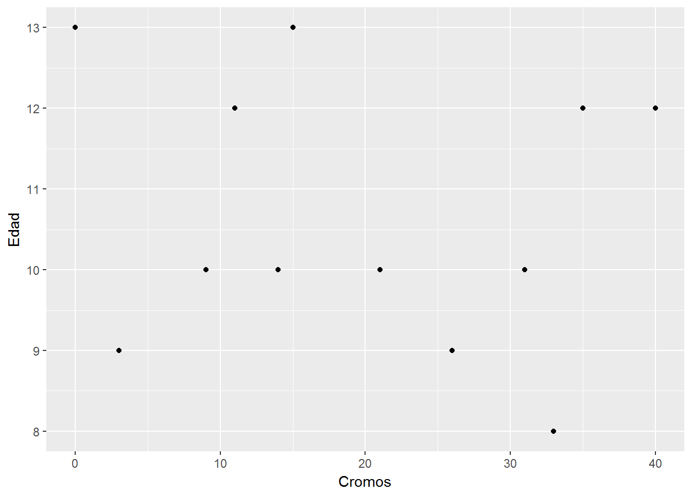
Puedo añadir una tercera variable (Nombre) para representarla por ejemplo mediante color:
qplot(Cromos, Edad, data=misdatos, color=Nombre)
(nótese que la leyenda se me crea automáticamente).
Otra utilidad conveniente a menudo a la hora de visualizar nuestros datos es hacer varias capas o particiones ( facets ) para mostrar los datos en función de determinadas variables. Veámoslos por ejemplo en función del deporte practicado.
qplot(Cromos, Edad, data=misdatos, color=Nombre, facets=.~Deporte)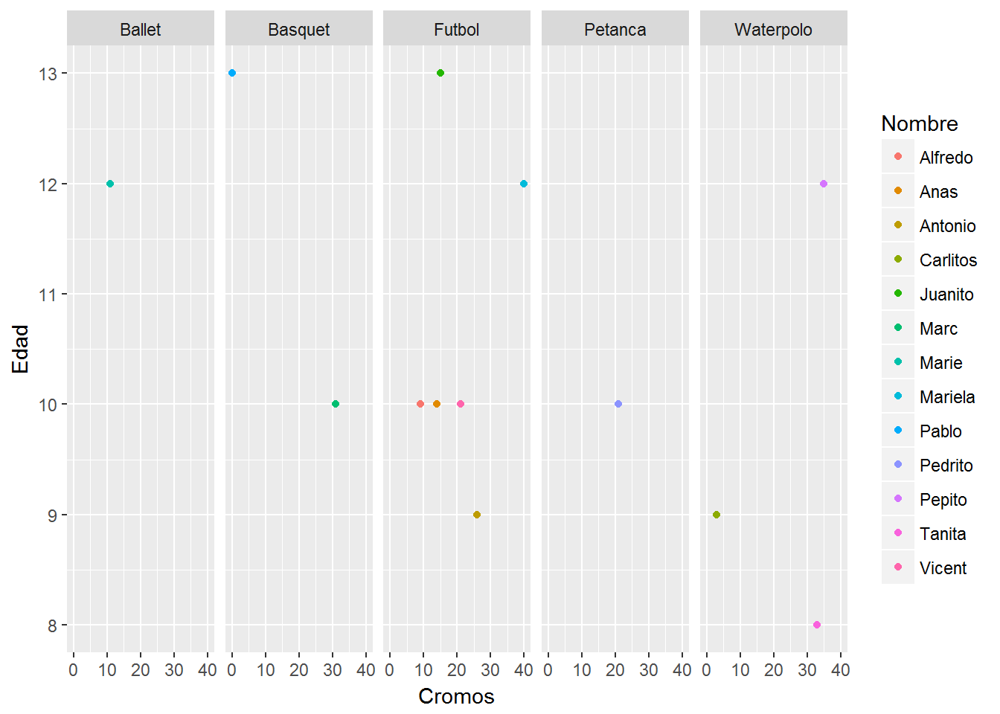
La opción qplot está bien para generar visualizaciones rápidas de nuestros datos, pero cuando queremos tener más control estético podemos usar la expresión ggplot seguida de los datos y a continuación los parámetros estéticos que deseemos (que indicamos con aes()), más la forma (geom) de los datos (sean puntos, barras u otras formas)
plot <- ggplot(misdatos, aes (Cromos, Edad)) + geom_point()
plot
Así, por ejemplo puedo añadir estética de color a los puntos, bien como una constante:
plot <- ggplot(misdatos, aes (Cromos, Edad)) + geom_point(color = "steelblue")
plot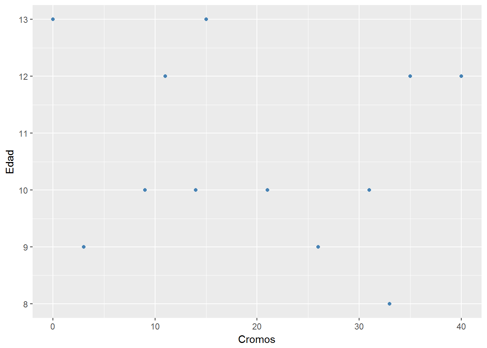
o bien como una variable (dónde el color es función del Sexo):
plot <- ggplot(misdatos, aes (Cromos, Edad)) + geom_point(aes(color=Sexo))
plot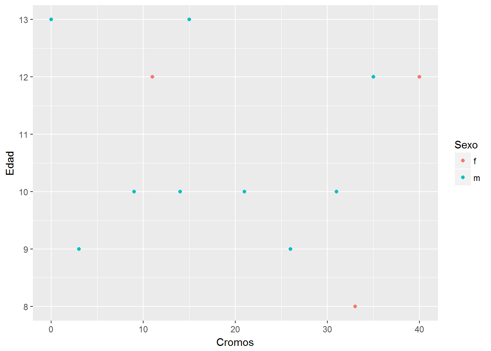
O el tamaño (size) es función del número de hermanos:
plot <- ggplot(misdatos, aes (Cromos, Edad)) + geom_point(aes(size=numerodehermanos))
plot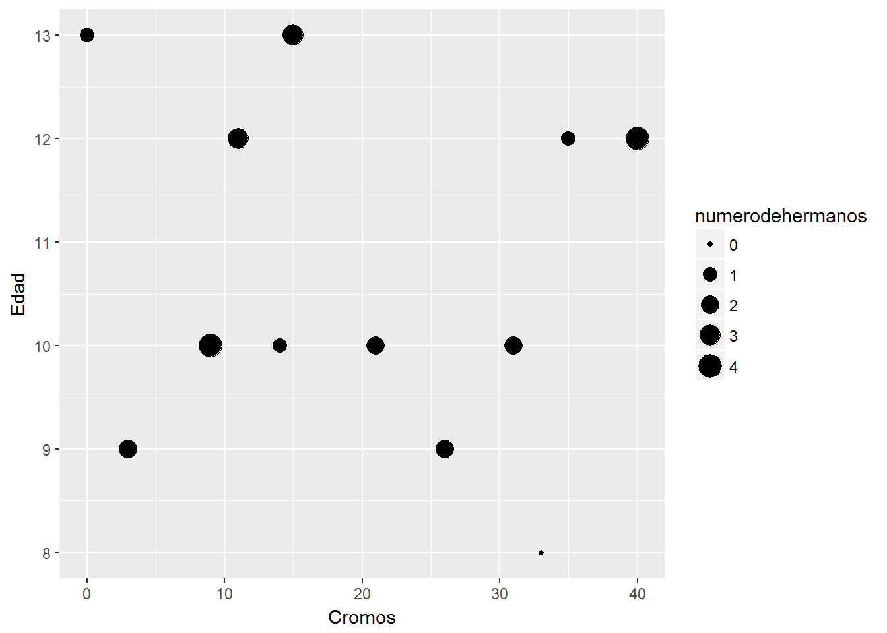
5.2 Histogramas
Para representar un histograma simplemente usariamos en este caso en nuestra expresión la forma estética geom_histogram.
library(ggplot2)
ggplot(misdatos, aes(numerodehermanos)) +
geom_histogram(binwidth=.5, fill="Steelblue", show.legend = FALSE)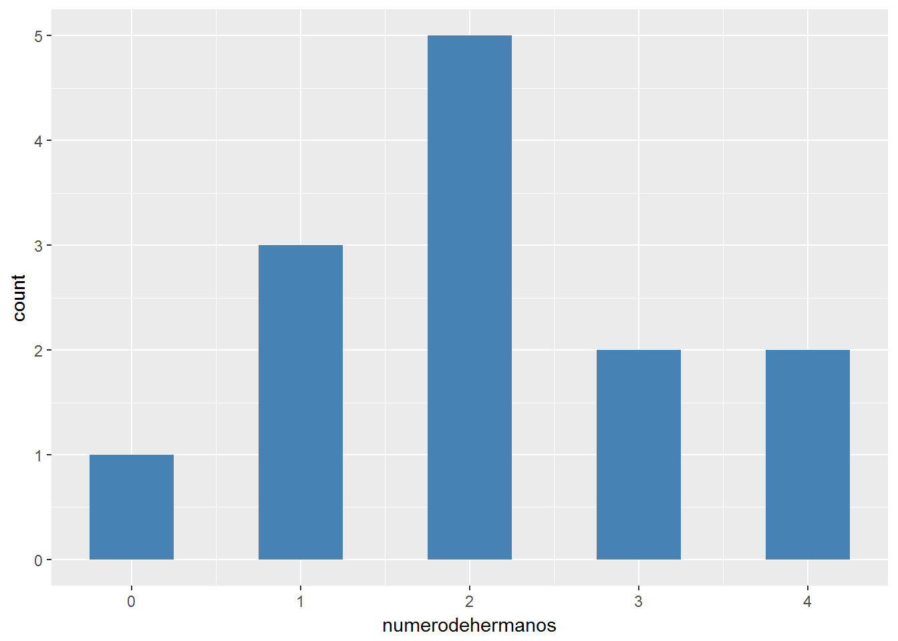
Nótese que a efectos estéticos hemos representado el histograma ajustando el ancho de las barras (con binwidth) y rellendando de color (con fill).
5.3 Redes
Eventualmente puede ser interesante visualizar datos que describen una red y percibir su estructura relacional.
Con el paquete igraph (Csardi and Nepusz 2006) podemos leer una red cuya información tengamos expresada en forma de nodos y enlaces.
En nuestro caso partimos de un arxivo de nodos que es una tabla de nombres de personas y un archivo de enlaces que es una tabla con tres columnas (nombre de una persona, nombre de otra persona con quien interacciona y número de cromos intercambiados).
#cargamos el paquete igraph
library(igraph)
#leemos archivos de nodos y de enlaces que tenemos en nuestro directorio
nodos <- read.csv("_bookdown_files/grafo_nodos.csv", header=T, as.is=T)
enlaces <- read.csv("_bookdown_files/grafo_enlaces.csv", header=T, as.is=T)Ahora podemos visualizar la red con el paquete igraph.
#trasformamos los datos en objetos de red mediante la función graph.data.frame
red <-graph.data.frame(enlaces, directed=TRUE, vertices = nodos)
#representamos el grafo especificando varios criterios estéticos
plot(red, layout=layout.fruchterman.reingold, vertex.size=9,
vertex.label.color="grey20", vertex.label.dist=0.9,
vertex.color="Steelblue", vertex.frame.color ="white",
edge.arrow.size=0.5, edge.curved=0, vertex.label.font=9,
vertex.label.cex=0.8)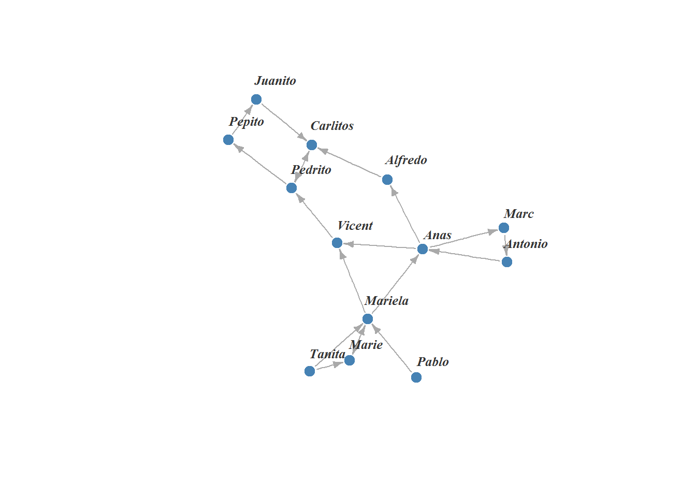
Apreciamos un grafo resultante cuyos nodos son los nombres de las personas y los enlaces los vínculos que éstas establecen (en este caso intercambio de cromos).
Podemos llegar a hacer grafos mucho más sofisticados que este: reflejar varias variables en ellos, distintos layouts, aplicar conceptos de la teoría de grafos (centralidad, cercanía, intermediacion) para entenderlos mejor, etc.
Para aprender más acerca de representaciones de redes con R recomiendo leer los excelentes materiales al respecto de Katya Ognyanova.
5.4 Mapas geográficos
También podemos representar en R mapas geográficos de varios modos; usamos paquetes como ggmap (Kahle 2016), tmap (Tennekes 2017) para representar los mapas y luego con paquetes como por ejemplo rgdal (Bivand 2017) podemos importar perímetros geoespaciales de áreas geográficas o países (en forma de shapefiles) en R y localizarlos en el mapa con nuestros datos.
Por ejemplo, podemos generar rápidamente un mapa de Europa con tmap con sólo indicar una región geográfica:
library(tmap)
#el paquete contiene una tabla con datos de los países europeos
data(Europe)
qtm(Europe)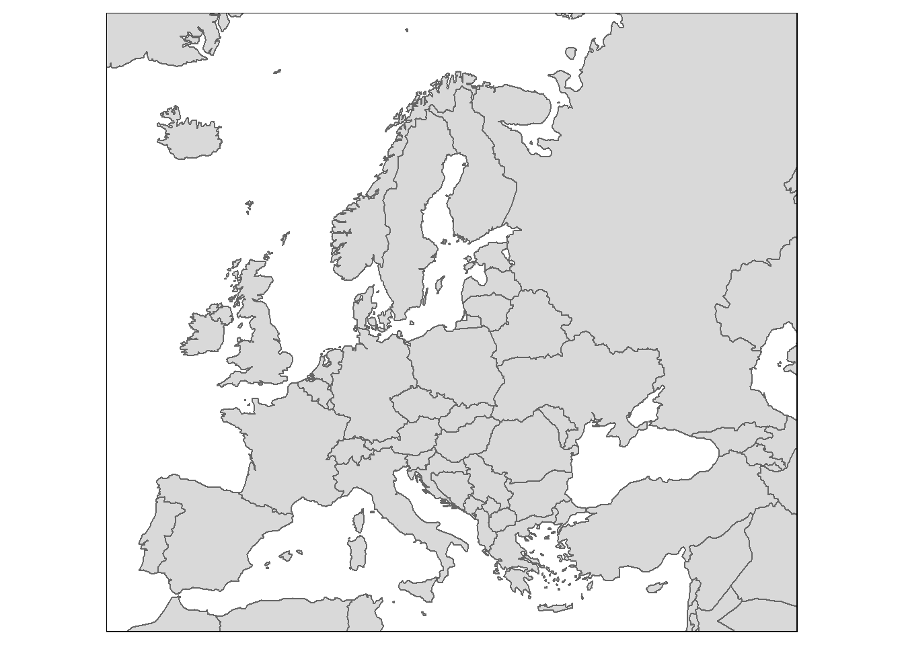
Alternativamente, con ggmap podríamos generar el mapa de una localización específica del siguiente modo:
library(ggmap)
#localizamos con longitud y latitud la zona que queremos
cat <- c(lon = 1.6430518, lat = 41.6960344)
#generamos el mapa indicando la fuente (google) y el zoom que queremos
map <- get_map(location=cat, source="google", zoom=8)
ggmap(map)
Si quisieramos otro tipo de representación (maptype) y color (por ejemplo en blanco y negro) indicaríamos:
#el tipo de mapa de google puede ser “roadmap”, “terrain”, “satellite” o “hybrid”
map <- get_map(location=cat, source="google", zoom=8, maptype="roadmap", color="bw")
ggmap(map)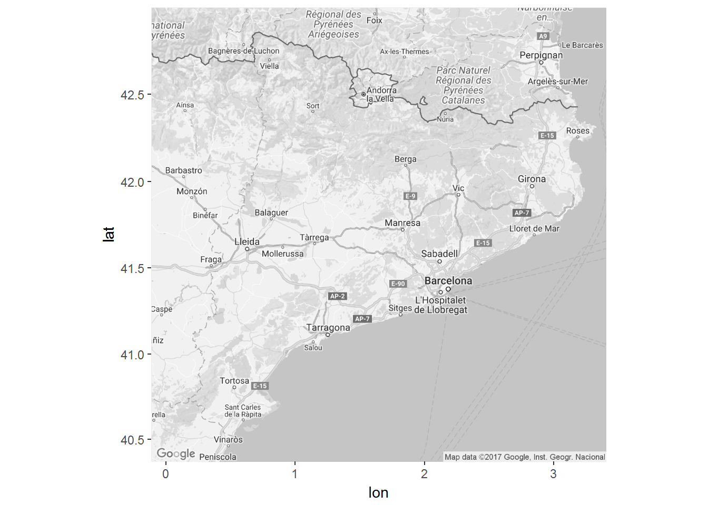
Si ahora quiero añadir un punto en el mapa (por ejemplo mi ciudad, Barcelona):
#añado la long/lat de Barcelona
ggmap(map)+ geom_point (aes (x = 2.1734, y = 41.3851),
#e indico la transparencia (alpha), color y tamaño del punto
alpha = .3, color="steelblue", size = 5)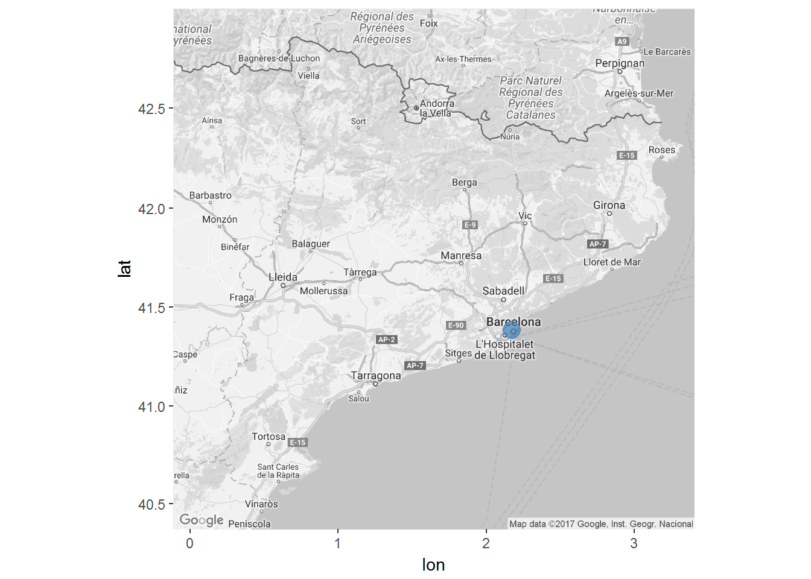
Incluso puedo añadir datos al mapa; por ejemplo, los distritos de la ciudad.
#primero encuentro las shapefiles de los distritos de Barcelona en datos abiertos:
#https://laura-an.carto.com/tables/shapefile_distrito_barcelona/public
#me las descargo en mi directorio de trabajo
#focalizo el mapa en Barcelona
bcn <- c(lon = 2.1734, lat = 41.3851)
map <- get_map(location=bcn, source="google", zoom=11, maptype="roadmap", color="bw")
#cargo el paquete rgdal para importar las shapefiles de los distritos al mapa
library(rgdal)
shapefiles<-readOGR(dsn="_bookdown_files/shapefile_distrito_barcelona.shp",
layer="shapefile_distrito_barcelona") ## OGR data source with driver: ESRI Shapefile
## Source: "_bookdown_files/shapefile_distrito_barcelona.shp", layer: "shapefile_distrito_barcelona"
## with 10 features
## It has 12 fields#lo represento en el mapa:
ggmap(map)+ geom_polygon(aes(x = long, y = lat, group=id),
data = shapefiles, color = "white", fill = "orange",
alpha = .3, size = .2)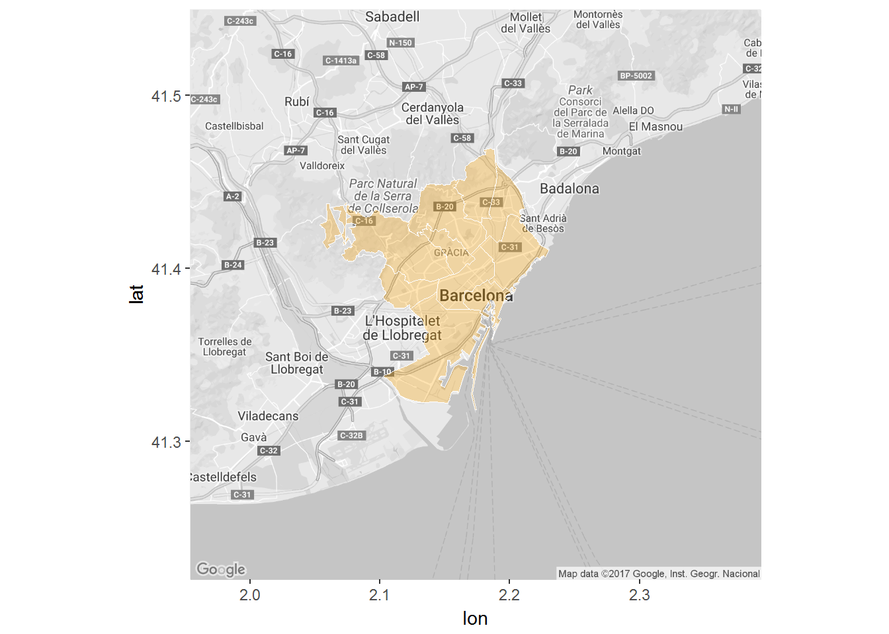
Referencias
Wickham, Hadley. 2009. Ggplot2: Elegant Graphics for Data Analysis. Springer Verlag New York. https://ggplot2.org.
Csardi, Gabor, and Tamas Nepusz. 2006. “The Igraph Software Package for Complex Network Research.” InterJournal Complex Systems: 1695. http://igraph.org.
Kahle, David. 2016. Ggmap: Spacial Visualization with Ggplot2. http://CRAN.R-project.org/package=ggmap.
Tennekes, Martijn. 2017. Tmap; Thematic Maps. http://CRAN.R-project.org/package=tmap.
Bivand, Roger. 2017. Rgdal: Bindings for the ’Geospatial’ Data Abstraction Library. http://CRAN.R-project.org/package=rgdal.